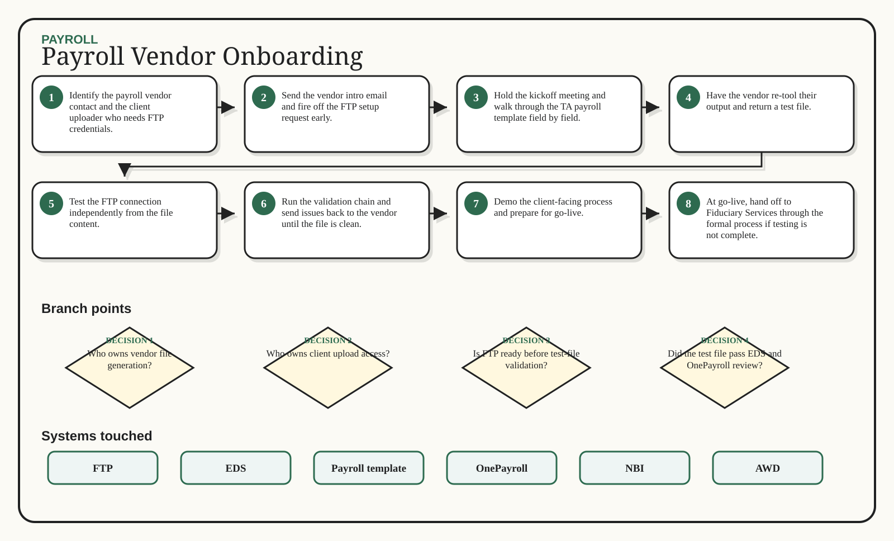

Payroll / Excalidraw flow
Payroll Vendor Onboarding
Get vendor files, FTP, validation, and handoff ready for go-live.
1Identify the payroll vendor contact and the client uploader who needs FTP credentials.
2Send the vendor intro email and fire off the FTP setup request early.
3Hold the kickoff meeting and walk through the TA payroll template field by field.
4Have the vendor re-tool their output and return a test file.
5Test the FTP connection independently from the file content.
6Run the validation chain and send issues back to the vendor until the file is clean.
7Demo the client-facing process and prepare for go-live.
8At go-live, hand off to Fiduciary Services through the formal process if testing is not complete.
Generated whiteboard
Multi-branch visual route

Branch map
Decisions that change the route
1
Who owns vendor file generation?
2
Who owns client upload access?
3
Is FTP ready before test-file validation?
4
Did the test file pass EDS and OnePayroll review?
5
Is payroll testing complete by go-live?
Swimlane
Inputs -> action -> output
Input
Action
Output
Payroll vendor contact
Client uploader contact
TA payroll template
FTP setup request
Identify the payroll vendor contact and the client uploader who needs FTP credentials.
Send the vendor intro email and fire off the FTP setup request early.
Hold the kickoff meeting and walk through the TA payroll template field by field.
Have the vendor re-tool their output and return a test file.
Vendor contact chain
FTP access
Validated payroll test file
Client demo
System boxes
Where the work happens
FTP
EDS
Payroll template
OnePayroll
NBI
AWD
Sticky notes
Do not miss these
Done means done